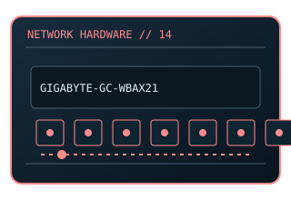

[ MODEL-SPECIFIC NETWORK HARDWARE ]
GIGABYTE GC-WBAX210 Wi-Fi 6E PCIe Adapter
PCIe desktop Wi-Fi 6E / Bluetooth adapter kit based on an M.2 radio module. This entry uses the labeled manufacturer model identifier and cites primary product/support documentation.

MODEL IDENTIFICATION: Match the complete model/part number and hardware revision on the item label to manufacturer documentation. Do not apply this entry to near-name variants.
Exact specifications and compatibility
| Cataloged model | GIGABYTE GC-WBAX210 Wi-Fi 6E PCIe Adapter |
|---|---|
| Dedicated subcategory | Wireless adapters |
| Bus / host interface | PCIe x1 host card with internal module; Bluetooth uses USB header cable. |
| Ports / physical interfaces | 2×2 Wi-Fi antenna connectors; dual external antennas included with the kit. |
| PHY, radio or protocol | 802.11ax Wi-Fi 6E 2.4/5/6GHz subject to region; Bluetooth version depends on supplied module/revision. |
| PoE | No PoE input or PoE output is documented for this product. |
| Link-rate vs throughput | Rated AXE5400 aggregate PHY class; per-link payload depends on channel width, AP, interference and client. Link rates are nominal negotiated/PHY specifications, not measured application throughput; no measured specimen result is claimed. |
| Firmware / driver support | GIGABYTE support provides revision-specific drivers; module vendor driver may be required by OS. |
| Compatibility checks | Check package revision/module label, antenna kit, USB header and allowed 6GHz channels. |
Model-specific notes
Check included radio-module revision before assuming Bluetooth version.
Primary manufacturer sources
- GIGABYTE GC-WBAX210 product specifications and downloadsManufacturer product specification or documentation for the exact model/family.
- Manufacturer support and compatibility resourcesFirmware, driver, compatibility, revision or support details; applicability may depend on the exact hardware revision and region.
Vendor maximum rates are not test results. Confirm regional variants, hardware revision and current support status with the manufacturer.